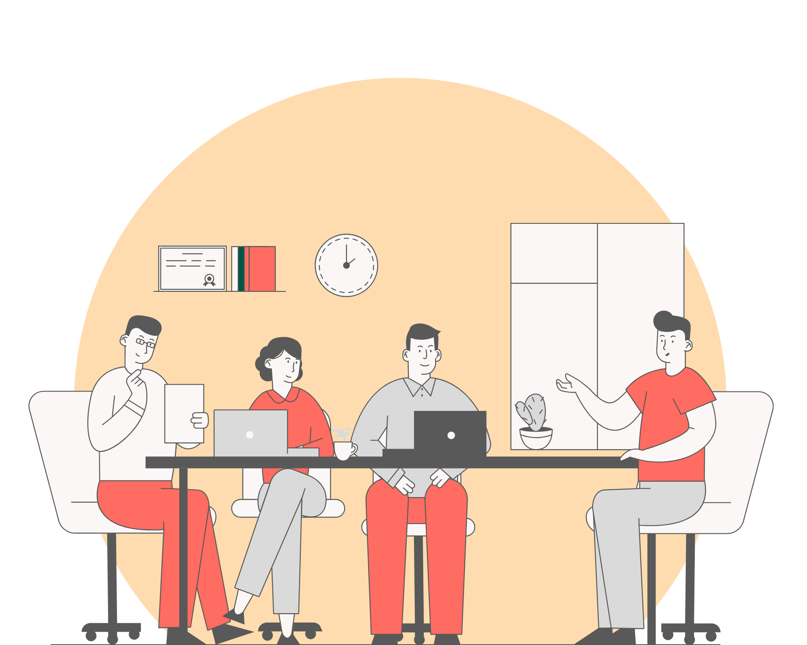

Skyddskommitté
På arbetsplatser med minst femtio regelbundet anställda ska det finnas en skyddskommitté. Denna kommitté består av representanter från både arbetsgivaren och arbetstagarna och har som uppgift att arbeta strategiskt med arbetsmiljöfrågor.
Skyddskommittén ansvarar för att planera och behandla frågor som rör hur risker i arbetet ska förebyggas, samt för frågor kring arbetsanpassning och rehabilitering.
Enligt arbetsmiljöförordningen ska skyddskommittén sammanträda minst en gång var tredje månad. Vid dessa möten bör även representanter från företagshälsovården delta för att bidra med sin expertis.
